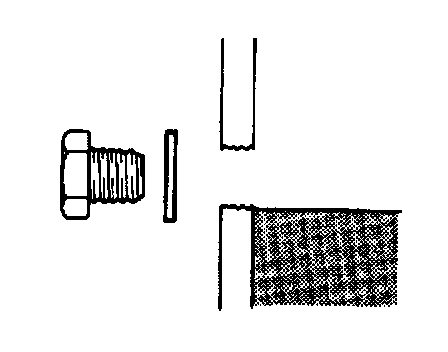

Fluid - Differential: Testing and Inspection
DIFFERENTIAL OIL INSPECTION1. Remove the filler plug.

2. Verify that the oil is at the brim of the filler plug hole. If it is low, add the specified oil.
3. Install the filler plug.
Tightening torque 40-53 Nm (4.0-5.5 kg-m, 29-39 ft. lbs.)